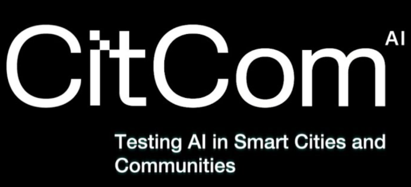

AI For Smart Cities Related Initiatives
Artificial Intelligence is a critical enabler for smart cities, powering decision support, predictive analytics, and adaptive services for citizens and infrastructure. In the LDT4SCC context, AI initiatives provide the intelligence layer that enhances the usability and impact of local digital twins, ensuring they can support real-time monitoring, planning, and policy evaluation. Some initiatives that are useful and are related to LDT4SCC and can provide important information and resources are:
CitCom.ai (CitComTEF)

Short Description: As part of the EU strategy for safe AI adoption, CitCom.ai (also referred to as CitComTEF) is a large-scale EU-funded project — a Testing and Experimentation Facility (TEF)— specifically tailored for AI and robotics in the domains of Smart Cities and Communities. It enables AI innovators, including SMEs and startups, to test and validate both software and hardware solutions in real environments before they’re deployed in urban settings. At the same time, it allows cities to have a reference initiative when adopting data, AI, and Local Digital Twin (LDT) solutions, building upon relevant use-cases and having access to validated solutions from the AI innovators community.
Key role in the LDT Ecosystem: CitCom.ai serves as a reference Testing and Experimentation Facility (TEF), supporting the safe, ethical, regulation-compliant, and interoperable deployment of AI in cities. It connects AI testing environments with Local Digital Twins (LDTs), providing a bridge between innovation and real-world deployment. Within the LDT ecosystem, CitCom.ai acts as a key validation step for AI innovators aiming to join the marketplace of the EU LDT Toolbox, ensuring successful and scalable integration into urban digital twins.
Relevance to LDT4SSC:
The initiative contributes directly to LDT4SSC by:
-
Supplying a catalogue of AI Testing and Experimentation services relevant for smart communities.
-
Benchmarking AI and robotics market trends in the smart city domain (Market report), helping pilots and stakeholders align their solutions with market and regulatory needs.
-
Providing Testing and Experimentation Facilities (TEFs) where LDT pilots can test innovative services in realistic environments, ensuring scalability, replicability, and compliance with European policies and sustainability goals.
-
Offering a reference common infrastructure supporting project operations across the technical domains of data spaces, data analytics, AI modelling, Local Digital Twins, and cybersecurity.
Key Assets and Resources: [catalogue of AI Testing and Experimentation services, Market report, TEFs, reference common infrastructure ]
Webpage / Reference Link:
https://www.citcom.ai
Main contact point:
- Tamara De Swert, Project Coordinator: tamara.deswert@imec.be
Big Data Test Infrastructure (BDTI) – European Commission
Short Description:
The Big Data Test Infrastructure (BDTI) is a European Commission initiative designed to provide testing, validation, and benchmarking for big data technologies, platforms, and applications. It supports Local Digital Twins (LDTs), smart cities, and data spaces by offering scalable, secure, and interoperable testing environments. BDTI aligns with EU policies such as the Digital Europe Programme, Horizon Europe, and the Data Governance Act, and enables public administrations, businesses, and researchers to validate big data solutions in compliance with EU standards (e.g., Gaia-X, FIWARE, NGSI-LD). It is complemented by training, certification, and community engagement programmes, and validates its strategies through pilot projects in European cities and regions, engaging public administrations, SMEs, and research organisations.
Key role in the LDT Ecosystem:
BDTI plays a critical role in the LDT ecosystem by providing a testing and validation framework for big data technologies. It ensures compliance, scalability, and interoperability of LDT deployments, and supports cross-sector collaboration (e.g., mobility, energy, environment) through standardized testing environments. By aligning with EU policies (e.g., Digital Decade 2030, Data Governance Act), it builds legal compliance and trust into LDT projects while also facilitating innovation and funding by connecting projects to European programmes.
Relevance to LDT4SSC:
The initiative contributes directly to LDT4SSC by:
- Providing a testing and validation framework for big data in LDTs, ensuring interoperability and compliance.
- Supporting cross-domain collaborationvacross mobility, energy, and environment sectors.
- Ensuring compliance with EU regulations (e.g., GDPR, Data Governance Act), reducing risks for cities and communities.
- Facilitating innovation and scalability by linking LDT pilots with EU programmes (Horizon Europe, Digital Europe).
Key Assets and Resources:
[BDTI Policy Overview, BDTI Knowledge Base, BDTI Github]
Webpage / Reference Link:
https://digital-strategy.ec.europa.eu/en/policies/bdti
Main contact point:
- Maria Claudia Bodino, BTDI project officer: mariaclaudia.bodino@ec.europa.eu
deployAI - AI Deployment Platform for Smart Cities and Local Digital Twins
Short Description:
deployAI ( AI Deployment Platform for Smart Cities and Local Digital Twins) is an AI deployment platform designed to simplify the integration of artificial intelligence into smart city applications and Local Digital Twins (LDTs). It provides tools, frameworks, and best practices for deploying, managing, and scaling AI models in urban environments—enabling data-driven decision-making, automation, and predictive analytics. deployAI aligns with EU policies (e.g., AI Act, Digital Decade 2030) and supports interoperability with EU data spaces and standards (e.g., Gaia-X**, FIWARE, NGSI-LD). It accelerates AI adoption by offering ready-to-use components, ensuring regulatory compliance (AI Act, GDPR), and fostering collaboration across public administrations, businesses, and researchers through training, certification, community engagement, and pilot projects in European cities (e.g., Barcelona, Helsinki, Amsterdam).
Key role in the LDT Ecosystem:
deployAI plays a critical role in the LDT ecosystem by:
- Providing AI deployment tools for real-time analytics, automation, and predictive modelling in LDTs.
- Ensuring compliance with EU AI regulations (AI Act, GDPR), reducing legal and operational risks.
- Supporting cross-domain use cases (mobility, energy, environment) via AI-driven insights.
- Facilitating interoperability with EU data spaces and standards (Gaia-X, FIWARE, NGSI-LD) to enable scalable, replicable LDT deployments.
Relevance to LDT4SSC:
The initiative contributes directly to LDT4SSC by:
- AI Deployment Tools: Ready-to-use frameworks for deploying AI models in LDTs, enabling real-time analytics and automation.
- Compliance with EU Regulations: Built-in practices to help ensure conformity with the AI Act, GDPR, and the Data Governance Act.
- Cross-Domain Use Cases: Supports mobility, energy, and environmental applications for holistic urban planning and sustainability.
- Interoperability with EU Data Spaces: Integrates with Gaia-X, FIWARE, and NGSI-LD for scalable, portable solutions.
- Pilot Projects and Use Cases: Provides real-world references (e.g., Barcelona, Helsinki) that LDT4SSC can replicate and scale.
Key Assets and Resources:
[EIT News on deployAI, EIT Digital newsroom article, EU Funding & Tenders project page]
Webpage / Reference Link:
https://www.eitdigital.eu/newsroom/news/2024/deployai-brings-the-ai-on-demand-platform-to-the-market-starting-today/
Main contact point:
- Federico Guerrini, Communications Lead I&E at EIT Digital: federico.guerrini@eitdigital.eu